Last updated: 2021-03-16
Checks: 6 1
Knit directory: LPMP/
This reproducible R Markdown analysis was created with workflowr (version 1.6.2). The Checks tab describes the reproducibility checks that were applied when the results were created. The Past versions tab lists the development history.
The R Markdown is untracked by Git. To know which version of the R Markdown file created these results, you’ll want to first commit it to the Git repo. If you’re still working on the analysis, you can ignore this warning. When you’re finished, you can run wflow_publish to commit the R Markdown file and build the HTML.
Great job! The global environment was empty. Objects defined in the global environment can affect the analysis in your R Markdown file in unknown ways. For reproduciblity it’s best to always run the code in an empty environment.
The command set.seed(20201214) was run prior to running the code in the R Markdown file. Setting a seed ensures that any results that rely on randomness, e.g. subsampling or permutations, are reproducible.
Great job! Recording the operating system, R version, and package versions is critical for reproducibility.
Nice! There were no cached chunks for this analysis, so you can be confident that you successfully produced the results during this run.
Great job! Using relative paths to the files within your workflowr project makes it easier to run your code on other machines.
Great! You are using Git for version control. Tracking code development and connecting the code version to the results is critical for reproducibility.
The results in this page were generated with repository version c70de91. See the Past versions tab to see a history of the changes made to the R Markdown and HTML files.
Note that you need to be careful to ensure that all relevant files for the analysis have been committed to Git prior to generating the results (you can use wflow_publish or wflow_git_commit). workflowr only checks the R Markdown file, but you know if there are other scripts or data files that it depends on. Below is the status of the Git repository when the results were generated:
Ignored files:
Ignored: .DS_Store
Ignored: .Rhistory
Ignored: .Rproj.user/
Ignored: analysis/cache/
Ignored: renv/.gitignore
Ignored: renv/library/
Ignored: renv/settings.dcf
Ignored: shiny/
Untracked files:
Untracked: analysis/mouse-neighbors.Rmd
Untracked: code/weightedKNN.R
Note that any generated files, e.g. HTML, png, CSS, etc., are not included in this status report because it is ok for generated content to have uncommitted changes.
There are no past versions. Publish this analysis with wflow_publish() to start tracking its development.
Setup chunk options:
knitr::opts_chunk$set(
autodep = TRUE,
cache = FALSE,
cache.lazy = FALSE,
cache.path = "cache/mouse-neighbors.Rmd/",
dev = "png",
error = FALSE,
message = FALSE,
warning = FALSE,
fig.align = "center",
out.width = '100%'
)Load Bioconductor packages:
library(BiocNeighbors)
library(MouseGastrulationData)
library(batchelor)
library(scater)
library(scran)
library(scuttle)Load CRAN packages:
library(ggforce)
library(pheatmap)Source user functions:
source("code/splitByCol.R")
source("code/weightedKNN.R")Read experiment object:
sce <- readRDS("output/mouse-integration.rds")Define source annotation:
sce$source <- "reference"
sce$source[sce$batch == "LPMP_EHF"] <- "query"
sce$source[sce$batch == "LPMP_LHF"] <- "query"Split experiment object by source:
sce <- splitByCol(sce, sce$source)Extract corrected PCA matrix for reference and query data:
dim <- list(
reference = reducedDim(sce$reference, "corrected"),
query = reducedDim(sce$query, "corrected")
)Find kNN in reference data for each point in query data:
set.seed(0011110001)
knn <- queryKNN(X = dim$reference, query = dim$query, k = 20) # k = 20 to match fastMNNCreate matrix of kNN annotations:
knn$cell <- structure(sce$reference$cell[knn$index], .Dim = dim(knn$index))
knn$stage <- structure(sce$reference$stage[knn$index], .Dim = dim(knn$index))
knn$celltype <- structure(sce$reference$celltype[knn$index], .Dim = dim(knn$index))Plot UMAP embedding of kNN cells:
dat <- list(
reference = makePerCellDF(sce$reference, use.coldata = c("stage", "celltype"), use.dimred = "UMAP"),
query = makePerCellDF(sce$query, use.coldata = "sample", use.dimred = "UMAP")
)
dat$reference$neighbor <- "Non-neighbor"
dat$reference$neighbor[sce$reference$cell %in% knn$cell] <- "Neighbor"
dat$reference$neighbor <- factor(dat$reference$neighbor, levels = c("Neighbor", "Non-neighbor"))
ggplot(dat$reference, aes(UMAP.1, UMAP.2, colour = celltype)) +
geom_point(size = 0.1) +
geom_point(data = dat$query, aes(UMAP.1, UMAP.2, shape = sample), size = 1, inherit.aes = FALSE) +
scale_colour_manual(name = "Celltype", values = EmbryoCelltypeColours) +
scale_shape_manual(name = "Query", values = c(1, 4)) +
guides(colour = guide_legend(override.aes = list(size = 1))) +
facet_grid(neighbor ~ stage, drop = FALSE) +
theme_no_axes() +
theme(aspect.ratio = 1)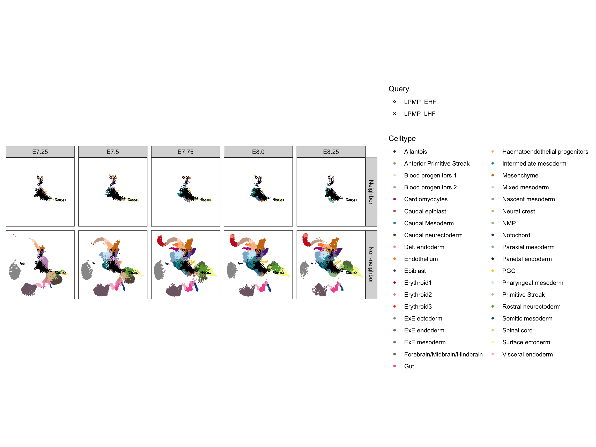
Plot UMAP embedding of kNN stages:
dat <- list(
reference = makePerCellDF(sce$reference, use.coldata = c("stage", "celltype"), use.dimred = "UMAP"),
query = makePerCellDF(sce$query, use.coldata = "sample", use.dimred = "UMAP")
)
dat$reference$neighbor <- "Non-neighbor"
dat$reference$neighbor[sce$reference$stage %in% knn$stage] <- "Neighbor"
dat$reference$neighbor <- factor(dat$reference$neighbor, levels = c("Neighbor", "Non-neighbor"))
ggplot(dat$reference, aes(UMAP.1, UMAP.2, colour = celltype)) +
geom_point(size = 0.1) +
geom_point(data = dat$query, aes(UMAP.1, UMAP.2, shape = sample), size = 1, inherit.aes = FALSE) +
scale_colour_manual(name = "Celltype", values = EmbryoCelltypeColours) +
scale_shape_manual(name = "Query", values = c(1, 4)) +
guides(colour = guide_legend(override.aes = list(size = 1))) +
facet_grid(neighbor ~ stage, drop = FALSE) +
theme_no_axes() +
theme(aspect.ratio = 1)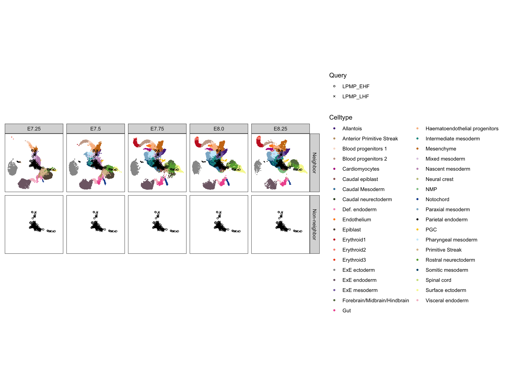
Plot UMAP embedding of kNN celltypes:
dat <- list(
reference = makePerCellDF(sce$reference, use.coldata = c("stage", "celltype"), use.dimred = "UMAP"),
query = makePerCellDF(sce$query, use.coldata = "sample", use.dimred = "UMAP")
)
dat$reference$neighbor <- "Non-neighbor"
dat$reference$neighbor[dat$reference$celltype %in% knn$celltype] <- "Neighbor"
dat$reference$neighbor <- factor(dat$reference$neighbor, levels = c("Neighbor", "Non-neighbor"))
ggplot(dat$reference, aes(UMAP.1, UMAP.2, colour = celltype)) +
geom_point(size = 0.1) +
geom_point(data = dat$query, aes(UMAP.1, UMAP.2, shape = sample), size = 1, inherit.aes = FALSE) +
scale_colour_manual(name = "Celltype", values = EmbryoCelltypeColours) +
scale_shape_manual(name = "Query", values = c(1, 4)) +
guides(colour = guide_legend(override.aes = list(size = 1))) +
facet_grid(neighbor ~ stage, drop = FALSE) +
theme_no_axes() +
theme(aspect.ratio = 1)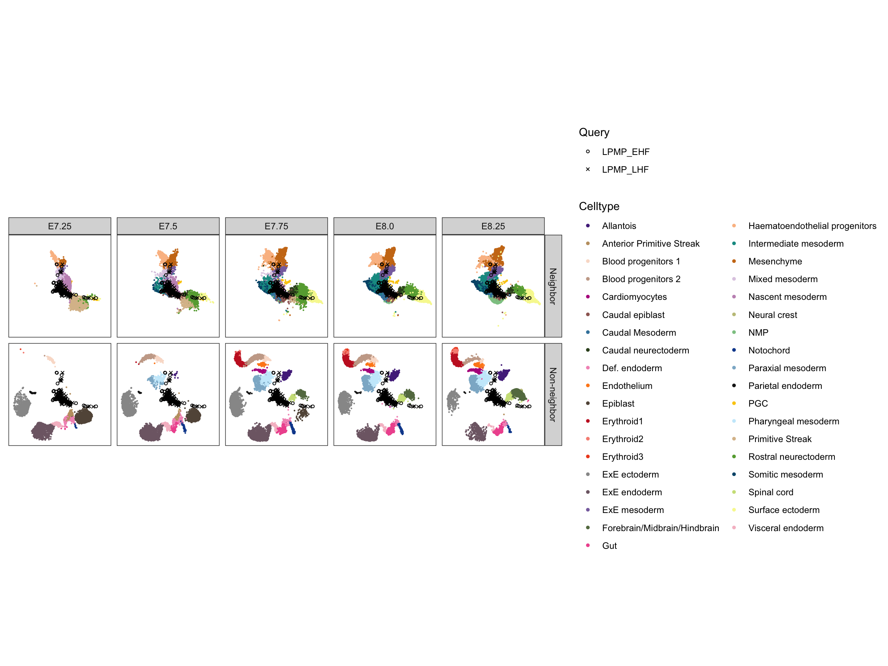
Annotate query data with weighted kNN annotations:
sce$query$cell.mapped <- as.list(as.data.frame(t(knn$cell)))
sce$query$stage.mapped <- weightedKNN(knn, class = "stage")
sce$query$celltype.mapped <- weightedKNN(knn, class = "celltype")Self-annotate reference data:
sce$reference$cell.mapped <- sce$reference$cell
sce$reference$stage.mapped <- sce$reference$stage
sce$reference$celltype.mapped <- sce$reference$celltypeSubset reference data to kNN annotations:
id1 <- sce$reference$celltype %in% sce$query$celltype.mapped
id2 <- sce$reference$stage %in% sce$query$stage.mapped
idx <- id1 & id2
sce$reference <- sce$reference[, idx]Combine reference and query data:
sce <- cbind(sce$reference, sce$query)Model the per-gene variance:
dec <- modelGeneVar(sce, block = sce$sample)Read blacklist genes and subset by category:
nan <- read.csv("data/blacklist.csv")
nan <- subset(nan, CATEGORY %in% c("CC", "MT", "RP", "XIST", "Y"))Ignore blacklist genes in feature selection:
dec$blacklist <- FALSE
dec$blacklist[rownames(dec) %in% nan$ENSEMBL] <- TRUEIdentify highly variable genes:
hvg <- subset(dec, blacklist == FALSE)
hvg <- getTopHVGs(hvg, var.field = "bio", var.threshold = 0, fdr.field = "p.value", fdr.threshold = 0.05)Perform scaling normalization:
sce <- multiBatchNorm(sce, batch = sce$sample)Create sequential merge order:
tab <- as.data.frame(table(sce$sample, sce$stage), stringsAsFactors = FALSE)
colnames(tab) <- c("sample", "stage", "ncells")
tab <- subset(tab, ncells > 0)
tab <- subset(tab, sample %in% AtlasSampleMetadata$sample)
lvl <- c("E6.5", "E6.75", "E7.0", "mixed_gastrulation", "E7.25", "E7.5", "E7.75", "E8.0", "E8.25", "E8.5")
tab$stage <- factor(tab$stage, levels = lvl)
tab <- tab[order(tab$stage, tab$ncells, decreasing = TRUE), ]
idx <- c(tab$sample, "LPMP_LHF", "LPMP_EHF")Correct experiments using nearest neighbours:
set.seed(0000110010)
mnn <- correctExperiments(
sce,
batch = sce$sample,
subset.row = hvg,
correct.all = TRUE,
PARAM = FastMnnParam(merge.order = idx)
)Store combined variance model:
metadata(mnn)$modelGeneVar <- decStore highly variable genes:
metadata(mnn)$getTopHVGs <- hvgCheck proportion of lost variance:
var <- metadata(mnn)$merge.info$lost.var
col <- colorRampPalette(RColorBrewer::brewer.pal(n = 5, name = "Reds"))(100)
brk <- seq(0, max(var), length.out = 101)
pheatmap(var[, idx], color = col, display_numbers = TRUE, number_format = "%.2f", cluster_cols = FALSE, cluster_rows = FALSE, angle_col = 0)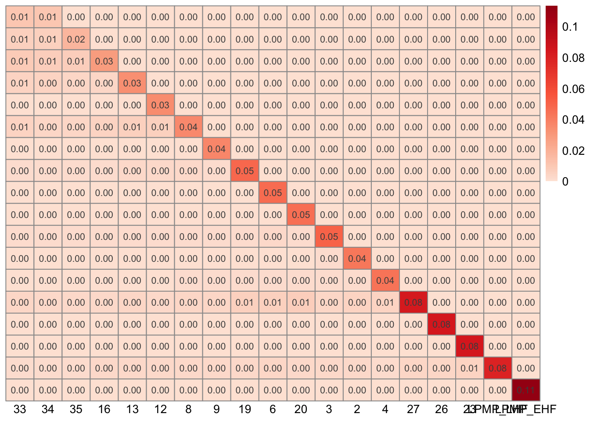
Cluster on the corrected PCA to obtain a partitioning of the cells:
snn <- buildSNNGraph(mnn, type = "jaccard", use.dimred = "corrected")
com <- igraph::cluster_louvain(snn)Tabulate number of cells from multiple batches within each cluster:
tab <- table(Cluster = com$membership, Batch = mnn$batch)
col <- colorRampPalette(RColorBrewer::brewer.pal(n = 5, name = "Blues"))(100)
brk <- seq(0, max(tab), length.out = 101)
pheatmap(tab[, idx], color = col, display_numbers = TRUE, number_format = "%d", cluster_cols = FALSE, cluster_rows = FALSE, angle_col = 0)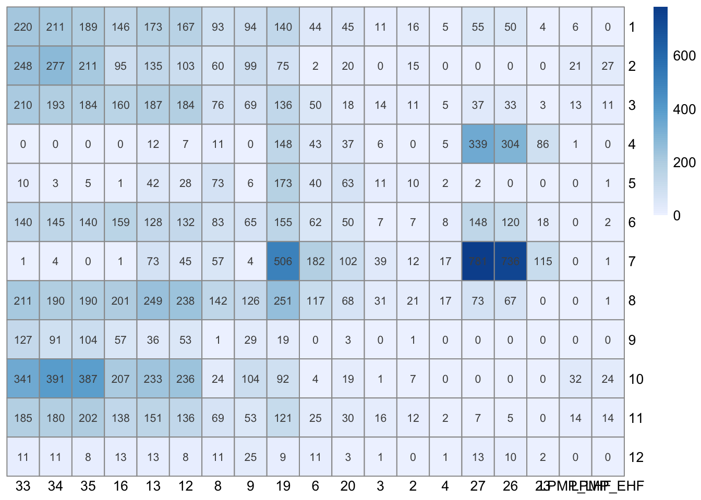
Perform TSNE on the corrected PCA matrix:
set.seed(42)
mnn <- runTSNE(mnn, dimred = "corrected", perplexity = 120) # same settings as reference analysisVisualize the corrected PCA using a TSNE plot:
ggcells(mnn, aes(TSNE.1, TSNE.2, colour = celltype.mapped)) +
geom_point(size = 0.1, show.legend = FALSE) +
scale_colour_manual(values = EmbryoCelltypeColours, na.value = "#000000") +
labs(x = "TSNE 1", y = "TSNE 2") +
facet_wrap(~ sample) +
theme_bw() +
theme(aspect.ratio = 1)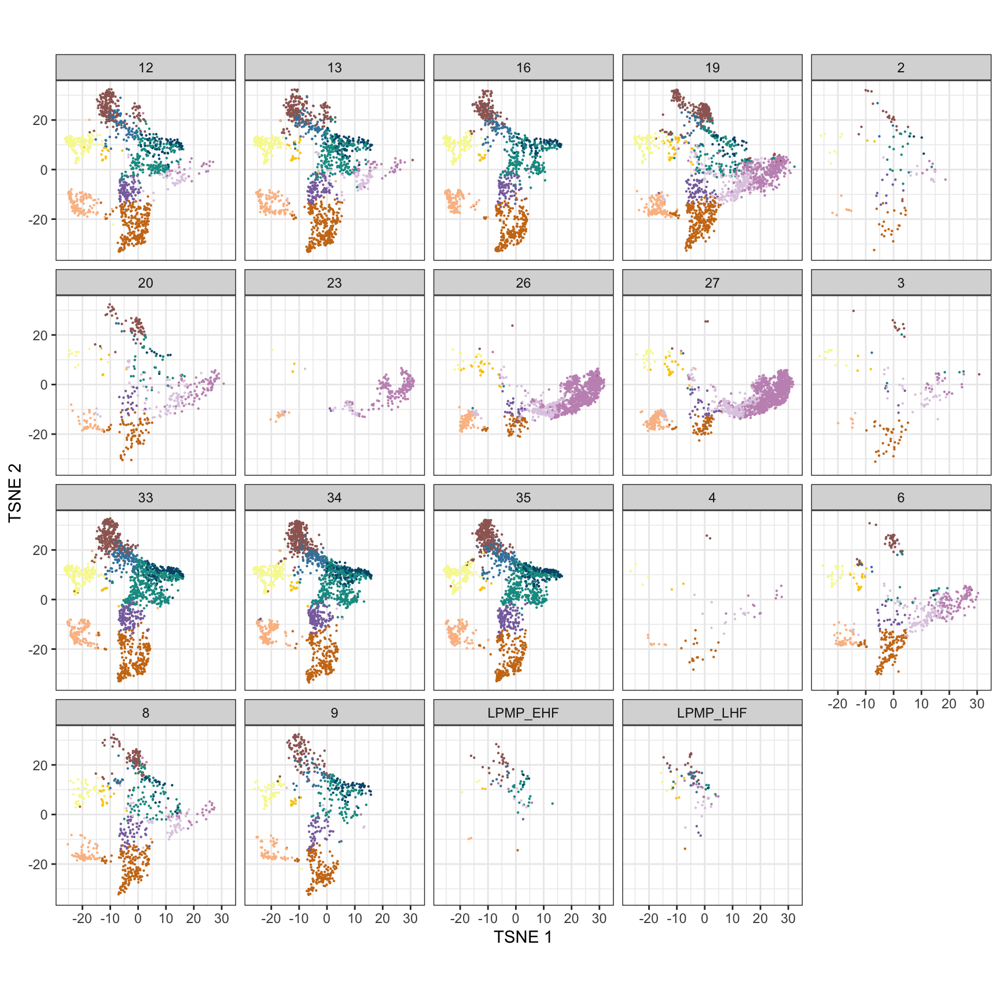
Perform UMAP on the corrected PCA matrix:
set.seed(42)
mnn <- runUMAP(mnn, dimred = "corrected", n_neighbors = 20, min_dist = 0.7) # same settings as reference analysisVisualize the corrected PCA using a UMAP plot:
ggcells(mnn, aes(UMAP.1, UMAP.2, colour = celltype.mapped)) +
geom_point(size = 0.1, show.legend = FALSE) +
scale_colour_manual(values = EmbryoCelltypeColours, na.value = "#000000") +
labs(x = "UMAP 1", y = "UMAP 2") +
facet_wrap(~ sample) +
theme_bw() +
theme(aspect.ratio = 1)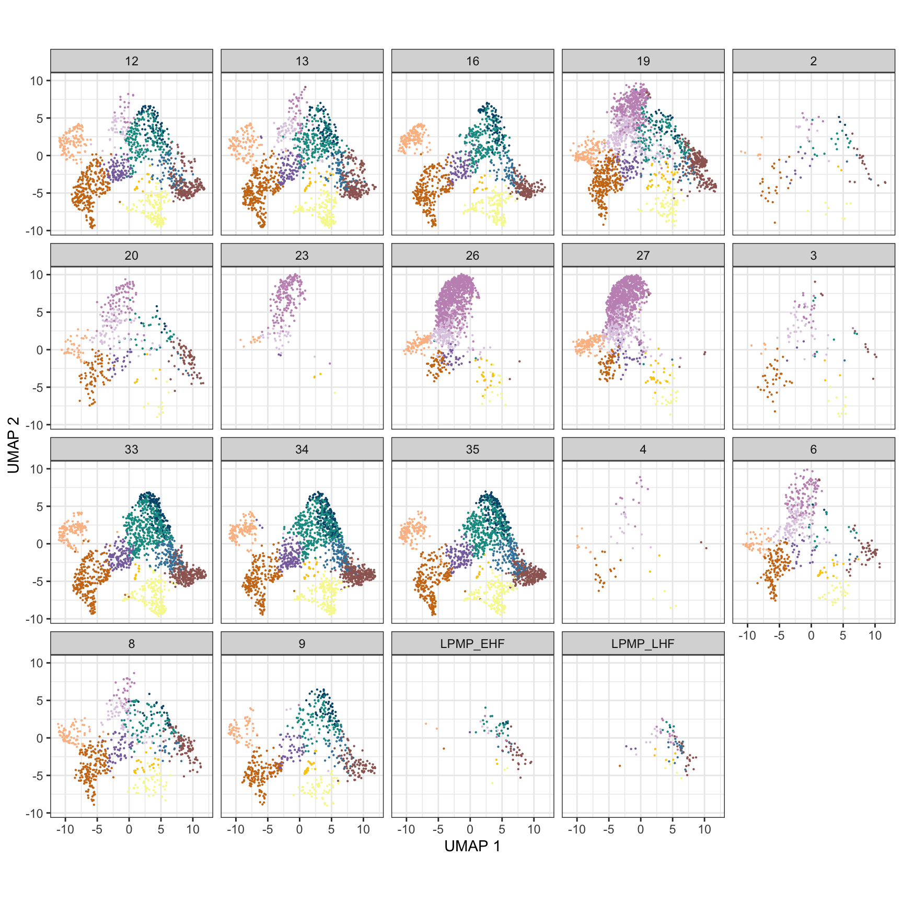
Plot TSNE embedding of mapped stage and mapped celltype:
dat <- list(
all = makePerCellDF(mnn, use.coldata = NULL, use.dimred = "TSNE"),
col = makePerCellDF(mnn, use.coldata = c("stage.mapped", "celltype.mapped", "source", "sample"), use.dimred = "TSNE")
)
dat$col$source <- "Embryo Atlas"
dat$col$source[dat$col$sample == "LPMP_EHF"] <- "LPMP EHF"
dat$col$source[dat$col$sample == "LPMP_LHF"] <- "LPMP LHF"
dat$col$source <- factor(dat$col$source, levels = c("Embryo Atlas", "LPMP LHF", "LPMP EHF"))
ggplot() +
geom_point(data = dat$all, aes(TSNE.1, TSNE.2), colour = "grey92", size = 0.1) +
geom_point(data = dat$col, aes(TSNE.1, TSNE.2, colour = celltype.mapped), size = 0.1) +
scale_colour_manual(name = "Celltype (Mapped)", values = EmbryoCelltypeColours) +
guides(colour = guide_legend(override.aes = list(size = 1))) +
facet_grid(source ~ stage.mapped) +
theme_no_axes() +
theme(aspect.ratio = 1)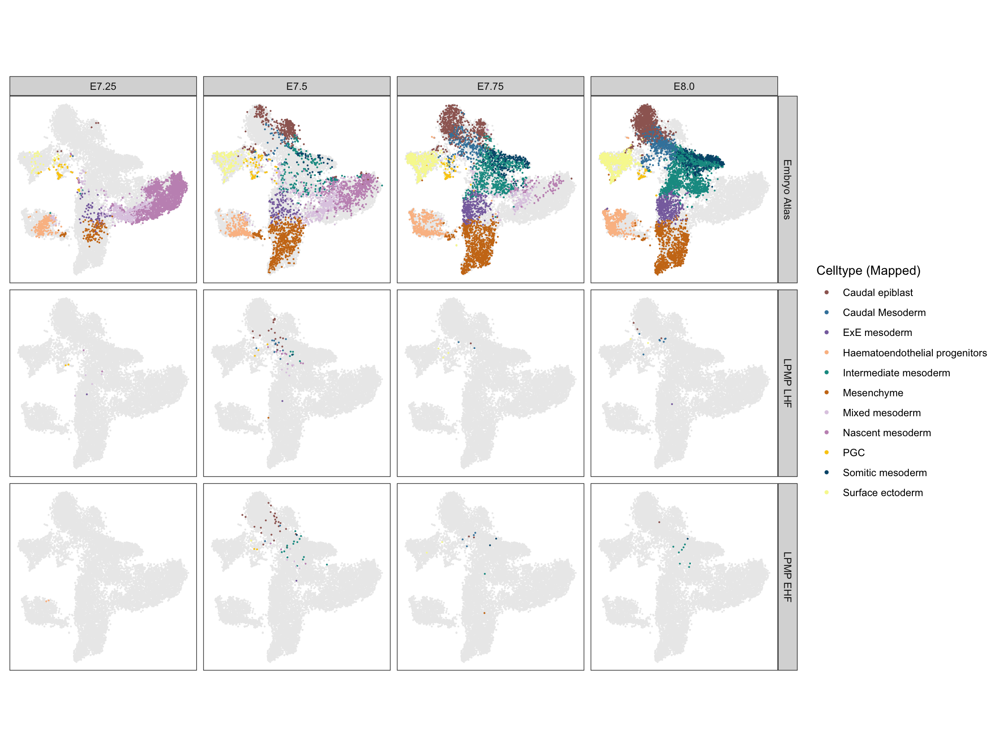
Plot UMAP embedding of mapped stage and mapped celltype:
dat <- list(
all = makePerCellDF(mnn, use.coldata = NULL, use.dimred = "UMAP"),
col = makePerCellDF(mnn, use.coldata = c("stage.mapped", "celltype.mapped", "source", "sample"), use.dimred = "UMAP")
)
dat$col$source <- "Embryo Atlas"
dat$col$source[dat$col$sample == "LPMP_EHF"] <- "LPMP EHF"
dat$col$source[dat$col$sample == "LPMP_LHF"] <- "LPMP LHF"
dat$col$source <- factor(dat$col$source, levels = c("Embryo Atlas", "LPMP LHF", "LPMP EHF"))
ggplot() +
geom_point(data = dat$all, aes(UMAP.1, UMAP.2), colour = "grey92", size = 0.1) +
geom_point(data = dat$col, aes(UMAP.1, UMAP.2, colour = celltype.mapped), size = 0.1) +
scale_colour_manual(name = "Celltype (Mapped)", values = EmbryoCelltypeColours) +
guides(colour = guide_legend(override.aes = list(size = 1))) +
facet_grid(source ~ stage.mapped) +
theme_no_axes() +
theme(aspect.ratio = 1)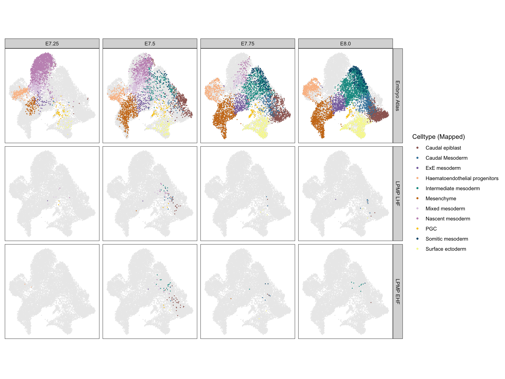
Split experiment object by source:
mnn <- splitByCol(mnn, mnn$source)Extract corrected PCA matrix for reference and query data:
dim <- list(
reference = reducedDim(mnn$reference, "corrected"),
query = reducedDim(mnn$query, "corrected")
)Find kNN in reference data for each point in query data:
set.seed(0011110001)
knn <- queryKNN(X = dim$reference, query = dim$query, k = 20) # k = 20 to match fastMNNCreate matrix of kNN annotations:
knn$cell <- structure(mnn$reference$cell[knn$index], .Dim = dim(knn$index))
knn$stage <- structure(mnn$reference$stage[knn$index], .Dim = dim(knn$index))
knn$celltype <- structure(mnn$reference$celltype[knn$index], .Dim = dim(knn$index))Plot UMAP embedding of kNN cells:
dat <- list(
reference = makePerCellDF(mnn$reference, use.coldata = c("stage", "celltype"), use.dimred = "UMAP"),
query = makePerCellDF(mnn$query, use.coldata = "sample", use.dimred = "UMAP")
)
dat$reference$neighbor <- "Non-neighbor"
dat$reference$neighbor[mnn$reference$cell %in% knn$cell] <- "Neighbor"
dat$reference$neighbor <- factor(dat$reference$neighbor, levels = c("Neighbor", "Non-neighbor"))
ggplot(dat$reference, aes(UMAP.1, UMAP.2, colour = celltype)) +
geom_point(size = 0.1) +
geom_point(data = dat$query, aes(UMAP.1, UMAP.2, shape = sample), size = 1, inherit.aes = FALSE) +
scale_colour_manual(name = "Celltype", values = EmbryoCelltypeColours) +
scale_shape_manual(name = "Query", values = c(1, 4)) +
guides(colour = guide_legend(override.aes = list(size = 1))) +
facet_grid(neighbor ~ stage, drop = FALSE) +
theme_no_axes() +
theme(aspect.ratio = 1)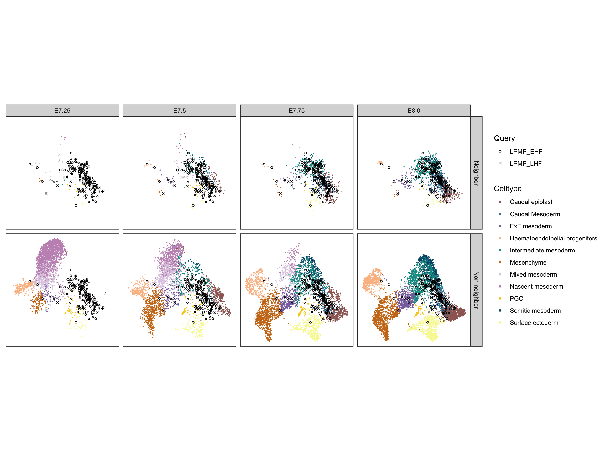
Plot UMAP embedding of kNN stages:
dat <- list(
reference = makePerCellDF(mnn$reference, use.coldata = c("stage", "celltype"), use.dimred = "UMAP"),
query = makePerCellDF(mnn$query, use.coldata = "sample", use.dimred = "UMAP")
)
dat$reference$neighbor <- "Non-neighbor"
dat$reference$neighbor[mnn$reference$stage %in% knn$stage] <- "Neighbor"
dat$reference$neighbor <- factor(dat$reference$neighbor, levels = c("Neighbor", "Non-neighbor"))
ggplot(dat$reference, aes(UMAP.1, UMAP.2, colour = celltype)) +
geom_point(size = 0.1) +
geom_point(data = dat$query, aes(UMAP.1, UMAP.2, shape = sample), size = 1, inherit.aes = FALSE) +
scale_colour_manual(name = "Celltype", values = EmbryoCelltypeColours) +
scale_shape_manual(name = "Query", values = c(1, 4)) +
guides(colour = guide_legend(override.aes = list(size = 1))) +
facet_grid(neighbor ~ stage, drop = FALSE) +
theme_no_axes() +
theme(aspect.ratio = 1)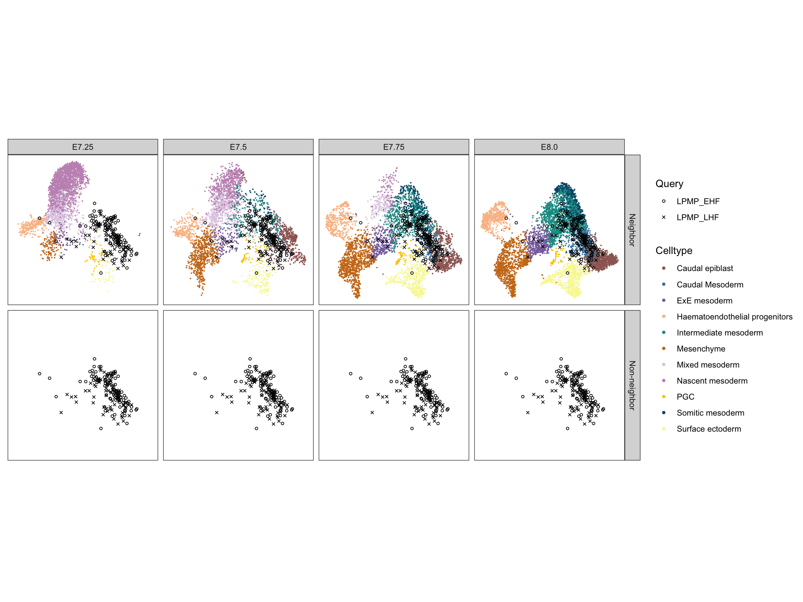
Plot UMAP embedding of kNN celltypes:
dat <- list(
reference = makePerCellDF(mnn$reference, use.coldata = c("stage", "celltype"), use.dimred = "UMAP"),
query = makePerCellDF(mnn$query, use.coldata = "sample", use.dimred = "UMAP")
)
dat$reference$neighbor <- "Non-neighbor"
dat$reference$neighbor[dat$reference$celltype %in% knn$celltype] <- "Neighbor"
dat$reference$neighbor <- factor(dat$reference$neighbor, levels = c("Neighbor", "Non-neighbor"))
ggplot(dat$reference, aes(UMAP.1, UMAP.2, colour = celltype)) +
geom_point(size = 0.1) +
geom_point(data = dat$query, aes(UMAP.1, UMAP.2, shape = sample), size = 1, inherit.aes = FALSE) +
scale_colour_manual(name = "Celltype", values = EmbryoCelltypeColours) +
scale_shape_manual(name = "Query", values = c(1, 4)) +
guides(colour = guide_legend(override.aes = list(size = 1))) +
facet_grid(neighbor ~ stage, drop = FALSE) +
theme_no_axes() +
theme(aspect.ratio = 1)Annotate query data with weighted kNN annotations:
mnn$query$cell.remapped <- as.list(as.data.frame(t(knn$cell)))
mnn$query$stage.remapped <- weightedKNN(knn, class = "stage")
mnn$query$celltype.remapped <- weightedKNN(knn, class = "celltype")Self-annotate reference data:
mnn$reference$cell.remapped <- mnn$reference$cell
mnn$reference$stage.remapped <- mnn$reference$stage
mnn$reference$celltype.remapped <- mnn$reference$celltypeCompare mapped and remapped stage annotations:
tab <- table(Mapped = mnn$query$stage.mapped, Remapped = mnn$query$stage.remapped)
col <- colorRampPalette(RColorBrewer::brewer.pal(n = 5, name = "Blues"))(100)
brk <- seq(0, max(tab), length.out = 101)
pheatmap(tab, color = col, display_numbers = TRUE, number_format = "%d", cluster_cols = FALSE, cluster_rows = FALSE, angle_col = 0)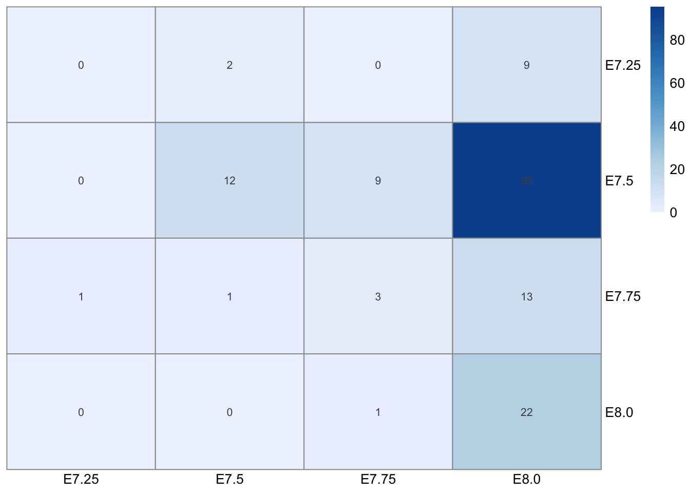
Compare mapped and remapped celltype annotations:
tab <- table(Mapped = mnn$query$celltype.mapped, Remapped = mnn$query$celltype.remapped)
col <- colorRampPalette(RColorBrewer::brewer.pal(n = 5, name = "Blues"))(100)
brk <- seq(0, max(tab), length.out = 101)
pheatmap(tab, color = col, display_numbers = TRUE, number_format = "%d", cluster_cols = FALSE, cluster_rows = FALSE, angle_col = 90)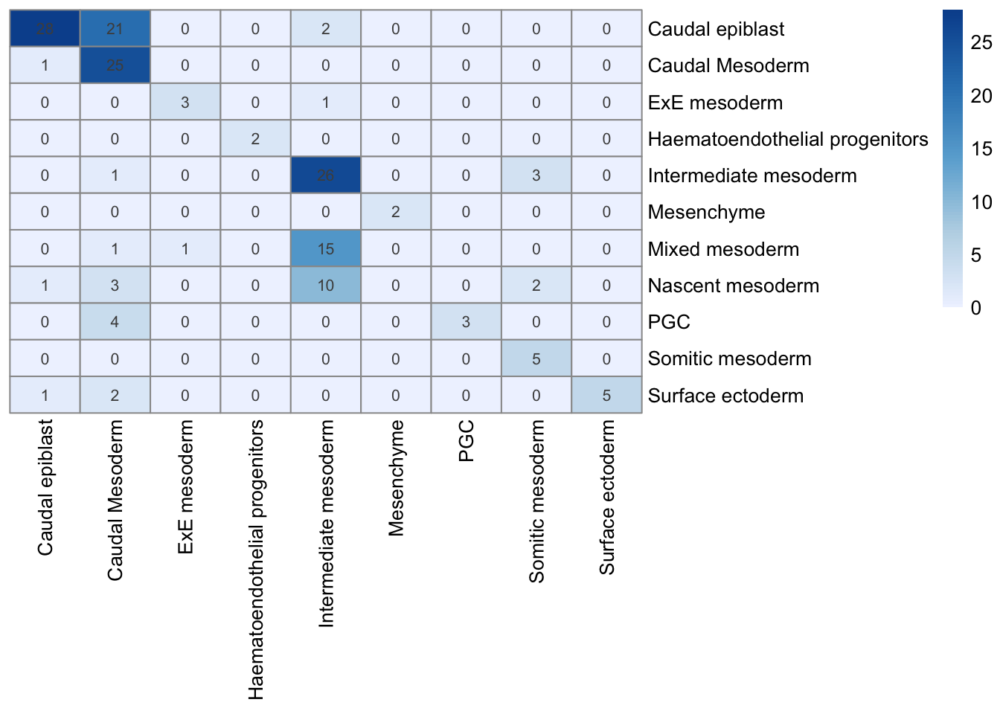
Combine reference and query data:
mnn <- cbind(mnn$reference, mnn$query)Save experiment object to disk:
saveRDS(mnn, file = "output/mouse-neighbors.rds")Print session information:
sessionInfo()R version 4.0.2 (2020-06-22)
Platform: x86_64-apple-darwin17.0 (64-bit)
Running under: macOS Catalina 10.15.7
Matrix products: default
BLAS: /Library/Frameworks/R.framework/Versions/4.0/Resources/lib/libRblas.dylib
LAPACK: /Library/Frameworks/R.framework/Versions/4.0/Resources/lib/libRlapack.dylib
locale:
[1] en_GB.UTF-8/en_GB.UTF-8/en_GB.UTF-8/C/en_GB.UTF-8/en_GB.UTF-8
attached base packages:
[1] parallel stats4 stats graphics grDevices datasets utils
[8] methods base
other attached packages:
[1] pheatmap_1.0.12 ggforce_0.3.2
[3] scuttle_1.0.4 scran_1.18.3
[5] scater_1.18.3 ggplot2_3.3.3
[7] batchelor_1.6.2 MouseGastrulationData_1.4.0
[9] SingleCellExperiment_1.12.0 SummarizedExperiment_1.20.0
[11] Biobase_2.50.0 GenomicRanges_1.42.0
[13] GenomeInfoDb_1.26.2 IRanges_2.24.1
[15] S4Vectors_0.28.1 BiocGenerics_0.36.0
[17] MatrixGenerics_1.2.0 matrixStats_0.57.0
[19] BiocNeighbors_1.8.2 workflowr_1.6.2
loaded via a namespace (and not attached):
[1] Rtsne_0.15 ggbeeswarm_0.6.0
[3] colorspace_2.0-0 ellipsis_0.3.1
[5] rprojroot_2.0.2 bluster_1.0.0
[7] XVector_0.30.0 fs_1.5.0
[9] rstudioapi_0.13 farver_2.0.3
[11] bit64_4.0.5 RSpectra_0.16-0
[13] interactiveDisplayBase_1.28.0 AnnotationDbi_1.52.0
[15] codetools_0.2-18 sparseMatrixStats_1.2.0
[17] cachem_1.0.1 knitr_1.30
[19] polyclip_1.10-0 ResidualMatrix_1.0.0
[21] dbplyr_2.0.0 uwot_0.1.10
[23] shiny_1.6.0 BiocManager_1.30.10
[25] compiler_4.0.2 httr_1.4.2
[27] dqrng_0.2.1 assertthat_0.2.1
[29] Matrix_1.3-2 fastmap_1.1.0
[31] limma_3.46.0 later_1.1.0.1
[33] tweenr_1.0.1 BiocSingular_1.6.0
[35] htmltools_0.5.1.1 tools_4.0.2
[37] rsvd_1.0.3 igraph_1.2.6
[39] gtable_0.3.0 glue_1.4.2
[41] GenomeInfoDbData_1.2.4 dplyr_1.0.3
[43] rappdirs_0.3.1 Rcpp_1.0.6
[45] vctrs_0.3.6 ExperimentHub_1.16.0
[47] DelayedMatrixStats_1.12.2 xfun_0.20
[49] stringr_1.4.0 beachmat_2.6.4
[51] mime_0.9 lifecycle_0.2.0
[53] irlba_2.3.3 renv_0.12.5
[55] statmod_1.4.35 AnnotationHub_2.22.0
[57] edgeR_3.32.1 zlibbioc_1.36.0
[59] MASS_7.3-53 scales_1.1.1
[61] promises_1.1.1 RColorBrewer_1.1-2
[63] yaml_2.2.1 curl_4.3
[65] memoise_2.0.0 gridExtra_2.3
[67] stringi_1.5.3 RSQLite_2.2.3
[69] BiocVersion_3.12.0 BiocParallel_1.24.1
[71] rlang_0.4.10 pkgconfig_2.0.3
[73] bitops_1.0-6 evaluate_0.14
[75] lattice_0.20-41 purrr_0.3.4
[77] labeling_0.4.2 bit_4.0.4
[79] tidyselect_1.1.0 RcppAnnoy_0.0.18
[81] magrittr_2.0.1 R6_2.5.0
[83] generics_0.1.0 DelayedArray_0.16.1
[85] DBI_1.1.1 pillar_1.4.7
[87] withr_2.4.1 RCurl_1.98-1.2
[89] tibble_3.0.5 crayon_1.3.4
[91] BiocFileCache_1.14.0 rmarkdown_2.6
[93] viridis_0.5.1 locfit_1.5-9.4
[95] grid_4.0.2 blob_1.2.1
[97] git2r_0.28.0 digest_0.6.27
[99] xtable_1.8-4 httpuv_1.5.5
[101] munsell_0.5.0 beeswarm_0.2.3
[103] viridisLite_0.3.0 vipor_0.4.5